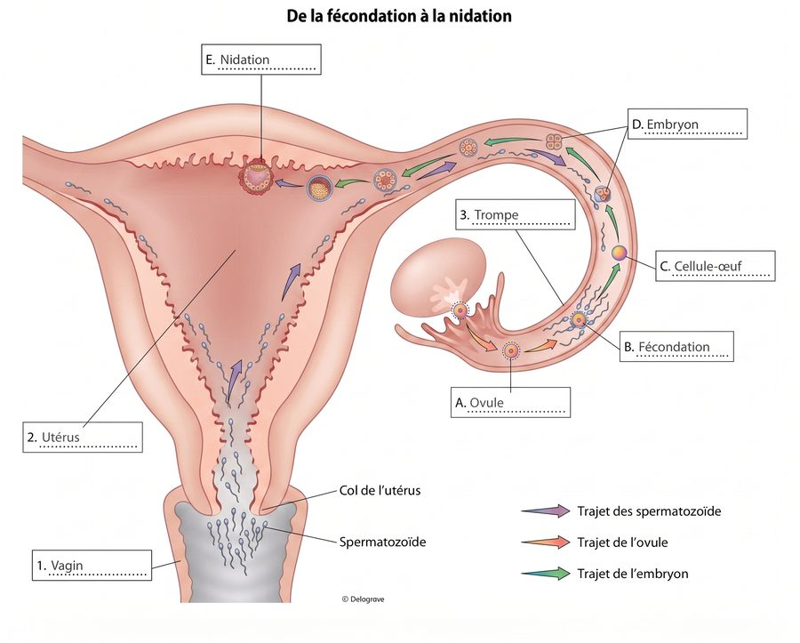
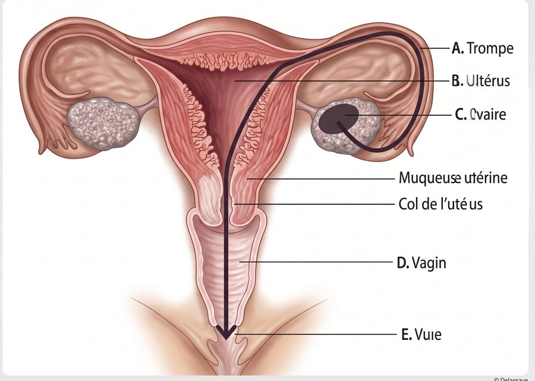

Situation — Nora et Yanis se posent des questions
Nora et Yanis sont en couple. Ils souhaitent avoir une relation sexuelle sans risque de grossesse non prévue. Ils veulent comprendre les moyens de contraception et savoir à qui demander conseil.
Cours standard adapté : mêmes objectifs que le programme CAP, textes courts, questions guidées, indices, corrigés, explications concrètes et audio sur les blocs.
Lire dans l’ordre. Chaque document est suivi de ses questions. Les images aident à comprendre, mais le texte suffit pour répondre.
Utiliser les aides. Ouvrir l’indice pour démarrer, le corrigé pour vérifier, puis l’explication pour comprendre avec un exemple concret.
Traiter l’information : repérer une information utile dans un document.
Analyser une situation : comprendre le problème, les personnes concernées et les causes possibles.
Mettre en relation : faire le lien entre une information du document et une connaissance du cours.
Nora et Yanis sont en couple. Ils souhaitent avoir une relation sexuelle sans risque de grossesse non prévue. Ils veulent comprendre les moyens de contraception et savoir à qui demander conseil.
1. À partir du document 1,
1.1C2Identifier le besoin principal de Nora et Yanis.
Chercher ce qu’ils veulent éviter avant une relation sexuelle.
Ils ont besoin de choisir une contraception adaptée.
Exemple : avant un rapport, un couple peut demander conseil à un professionnel pour éviter une grossesse non prévue et choisir un moyen fiable.
1.2C2Compléter deux informations de la situation.
Repérer les personnes et l’objectif de leur démarche.
Qui : Nora et Yanis. Pourquoi : éviter une grossesse non prévue et choisir une contraception.
Exemple : analyser la situation évite de donner une réponse générale ; on cherche une solution adaptée au couple.

Les spermatozoïdes sont les gamètes masculins. Les ovules sont les gamètes féminins. La fécondation est la rencontre d’un spermatozoïde et d’un ovule.
Après la fécondation, la cellule-œuf se divise et se déplace vers l’utérus. La nidation correspond à l’implantation de l’embryon dans la paroi de l’utérus.
2. À partir du document 2,
2.1C1Associer chaque mot à sa définition.
| Mot | Définition |
|---|---|
| Gamète | |
| Fécondation | |
| Nidation |
Repérer si le mot désigne une cellule, une rencontre ou une implantation.
Gamète : cellule reproductrice. Fécondation : rencontre ovule-spermatozoïde. Nidation : implantation dans l’utérus.
Exemple : la fécondation se passe avant la nidation ; on ne doit pas confondre la rencontre des gamètes et l’implantation de l’embryon.
2.2C1Numéroter les étapes dans l’ordre.
| Étape | Numéro |
|---|---|
| Ovulation | |
| Fécondation | |
| Déplacement vers l’utérus | |
| Nidation |
Chercher ce qui arrive d’abord à l’ovule, puis à l’embryon.
1 ovulation, 2 fécondation, 3 déplacement vers l’utérus, 4 nidation.
Exemple : l’ovule est libéré, puis peut rencontrer un spermatozoïde ; l’embryon se déplace ensuite vers l’utérus.

À partir de la puberté, les testicules produisent des spermatozoïdes. Les ovaires produisent des ovules et des hormones, comme les œstrogènes et la progestérone.
Les hormones sont des messagers chimiques du corps. Elles agissent sur des organes, par exemple l’utérus, qui se prépare à accueillir un embryon.
3. À partir du document 3,
3.1C1Relever deux organes producteurs de gamètes.
Chercher où sont produits les spermatozoïdes et les ovules.
Les testicules et les ovaires.
Exemple : les testicules produisent des spermatozoïdes ; les ovaires libèrent un ovule au cours du cycle.
3.2C3Expliquer le rôle d’une hormone.
Comparer une hormone à un message envoyé dans le corps.
Une hormone est un messager chimique qui agit sur un organe.
Exemple : les hormones ovariennes préparent l’utérus à accueillir un embryon si une fécondation a lieu.
Traiter l’information : repérer une information utile dans un document.
Mettre en relation : faire le lien entre une information du document et une connaissance du cours.
Proposer une solution : choisir une action adaptée à une situation.
Argumenter : donner une idée et l’appuyer avec une raison.
| Moyen | Mode d’action | Contrainte |
|---|---|---|
| Préservatif masculin | empêche les spermatozoïdes d’entrer | à chaque rapport |
| Pilule | bloque souvent l’ovulation | tous les jours |
| Implant | diffuse une hormone | posé par un professionnel |
| DIU au cuivre | agit dans l’utérus | posé par un professionnel |
1. À partir du document 4,
1.1C1Indiquer deux moyens posés par un professionnel.
Chercher dans la colonne « contrainte ».
L’implant et le DIU au cuivre.
Exemple : un DIU ne se pose pas seul ; il faut prendre rendez-vous avec un professionnel de santé.
1.2C3Associer chaque moyen à son action.
| Moyen | Action |
|---|---|
| Préservatif | |
| Pilule | |
| DIU cuivre |
Repérer le mode d’action dans le tableau.
Préservatif : barrière. Pilule : hormone. DIU cuivre : agit dans l’utérus.
Exemple : le préservatif empêche le passage des spermatozoïdes ; la pilule agit sur le fonctionnement hormonal.
Un moyen de contraception doit être choisi avec une information fiable et, si besoin, avec un professionnel de santé. Le choix dépend de la santé de la personne, du mode d’utilisation, de la durée souhaitée et du besoin de protection contre les IST.
Le préservatif est le seul moyen qui protège à la fois d’une grossesse et de nombreuses IST lorsqu’il est bien utilisé.
2. À partir du document 5,
2.1C4Proposer un moyen adapté pour éviter grossesse et IST.
Chercher le moyen qui protège aussi contre les IST.
Le préservatif, car il limite le passage des spermatozoïdes et protège contre de nombreuses IST.
Exemple : pour un nouveau couple, le préservatif est important car il protège d’une grossesse et réduit le risque d’IST.
2.2C5Argumenter l’intérêt de demander conseil à un professionnel.
Penser aux questions de santé, d’âge, d’oubli ou de durée.
Demander conseil est utile, car un professionnel aide à choisir un moyen adapté et fiable.
Exemple : si une personne oublie souvent une pilule, un professionnel peut expliquer d’autres possibilités comme l’implant ou le DIU.
Traiter l’information : repérer une information utile dans un document.
Mettre en relation : faire le lien entre une information du document et une connaissance du cours.
Proposer une solution : choisir une action adaptée à une situation.
Après un rapport sexuel mal ou non protégé, il faut demander conseil rapidement. La contraception d’urgence peut être utilisée le plus tôt possible pour réduire le risque de grossesse.
L’IVG est une interruption volontaire de grossesse. Elle ne doit pas être confondue avec la contraception d’urgence, qui intervient avant qu’une grossesse soit installée.
1. À partir du document 6,
1.1C3Distinguer contraception d’urgence et IVG.
| Situation | Réponse |
|---|---|
| Après un rapport à risque, le plus tôt possible | |
| Interruption volontaire d’une grossesse |
Repérer si l’action arrive après un risque ou après le début d’une grossesse.
Après un rapport à risque : contraception d’urgence. Interruption volontaire d’une grossesse : IVG.
Exemple : une pilule oubliée après un rapport peut nécessiter une contraception d’urgence ; ce n’est pas la même chose qu’une IVG.
1.2C4Proposer la conduite à tenir après une pilule oubliée avec rapport à risque.
Choisir une action rapide et une demande de conseil.
Demander conseil rapidement à un professionnel ou à une pharmacie et utiliser une contraception d’urgence si elle est indiquée.
Exemple : plus la contraception d’urgence est prise tôt après le rapport à risque, plus elle a de chances d’être efficace.
Un centre de santé sexuelle, une infirmière scolaire, un médecin, une sage-femme ou le planning familial peuvent informer sur la sexualité, la contraception, la grossesse, les IST et l’IVG.
Ces structures peuvent proposer écoute, information, consultation, orientation, contraception ou dépistage selon les situations.
2. À partir du document 7,
2.1C1Relever trois missions d’une structure d’accueil.
Chercher les actions réalisées par la structure.
Écouter, informer, consulter, orienter, proposer contraception ou dépistage.
Exemple : un élève peut poser une question confidentielle à l’infirmière scolaire ou être orienté vers un centre de santé sexuelle.
2.2C6Rédiger un conseil court à Nora et Yanis.
Rappeler leur besoin, proposer une protection et conseiller une structure.
Vous pouvez utiliser un préservatif pour limiter le risque de grossesse et d’IST. Pour choisir une contraception plus durable, demandez conseil à un professionnel de santé ou à un centre de santé sexuelle.
Exemple : un bon conseil ne juge pas ; il donne une action concrète et une ressource fiable.